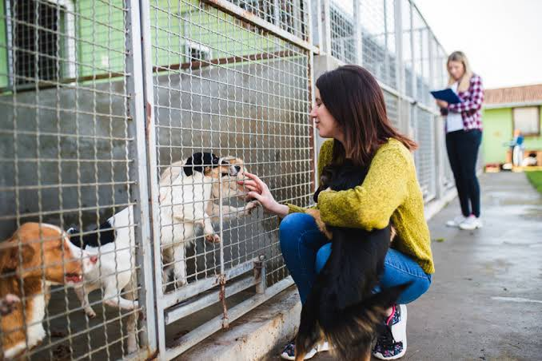

ABOUT US

Island Sanctuary Wildlife Reserve is a Non-Profit Organization
who aims to become an animal shelter
that rescues stray pets and
provide them a home where they are well fed and well taken
care of until they are to be adopted.
Location and Address

Additional Information
https://web.facebook.com/Island-Sanctuary-Wildlife-Reserve-1535421696478412
09497501518
habitatislandsanctuaries@gmail.com